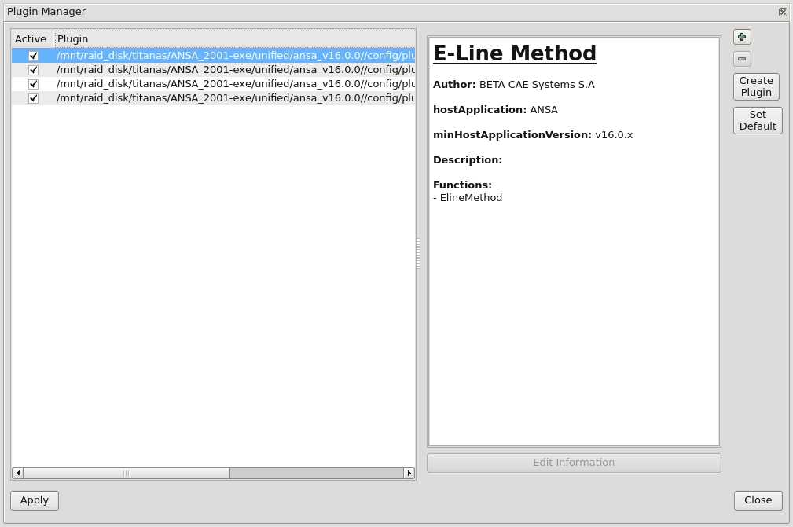
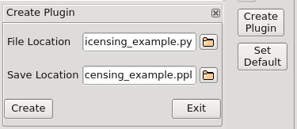
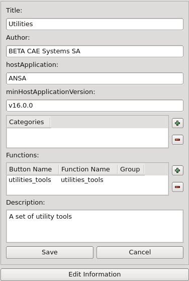
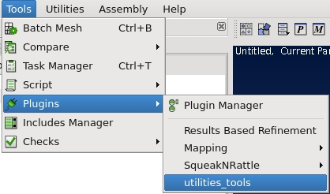

Apps and the ANSA Plugins Manager#
Introduction#
The Plugins Manager is a tool that allows the easy management of Apps. The user can select what apps to have available in ANSA from a pool of Apps. Apps are easy to be installed in the Plugin Manager.

Creating a Plugin#
In order to create a new plugin the developer needs to press the “Create Plugin” button. A pop up window requires two entries:
File Location: Is the file path of the main file of the app. It can be a py or a pyb file.
Save Location: Is the file path where the plugin file will be saved. The plugin file has a ppl extension

The newly created plugin will appear in the plugin manager. The plugin is initially deactivated. It can be activated by clicking in the checkbox.
The developer can add important information about the plugin through the Edit Information button. This information will be visible to the user in the Plugin Manager.

Note
Everytime a change is made in the Plugins Manager the user should save the ANSA GUI Settings and restart ANSA.
The created plugin is a python file with a ppl extension. The source code of the plugin is shown below:
import ansa
from ansa import constants
import beta
import os
class plinfos:
def __init__(self):
self.title = 'Utilities'
self.author = 'BETA CAE Systems'
self.hostApplication = 'ANSA'
self.minHostApplicationVersion = 'v16.0.0'
self.description = ''
self.menuEntry = ''
self.category = []
self.wikiUrl = ''
#PATH OF MAIN FILE (mandatory)
dir = os.path.dirname(os.path.realpath(__file__))
self.filepath = os.path.join(dir, 'licensing_example.py')
#BUTTONS OF PLUGIN
#KEY(string): "GROUPNAME:::BUTTONLABEL" or "BUTTONLABEL"
#VALUE(tuple): ("FUNCTIONNAME","FUNCTION'S TIP","FUNCTION'S HELP","FUNCTION'S IMAGE PATH")
self.Buttons = {'utilities_tools':('utilities_tools','','','')}
x= plinfos()
beta.setPluginInfos(x)
The complete source code can be found here plugin example
An additional example can be found in plugins directory of the ANSA installation. The source code of the MetaResultsPlugin is open for review.
The plugin will be available for users in the plugins menu shown below.

Distribution#
The developer can package the ppl file and the referenced python code and send it to the user. The user will place the package in the *’/config/plugins’* directory of the ANSA installation. When a user opens up ANSA the plugin will be visible in the Plugins Manager.